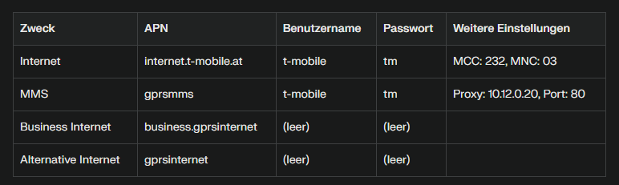

Hi
@Jonathan Dorian
ich habe leider das selbe Problem langsam wird es schon nervig ist dir dazu vlt. irgendetwas bekannt?
LG

Hallo. Ich bin seit einigen Monaten Magenta Kunde und nutze für Zuhause Internet 5g 600/60Mbit. In der Praxis liegt die Geschwindigketi zwischen 300-500Mbit je nach Tageszeit) Bis vor 2 Wochen hat das gut funktioniert bis ich immer wieder plötzliche Geschwindigkeitseinbrüche auf unter 100mbit feststellte. Interessanterweise immer so im Bereich 85-90Mbit weshalb ich mir den LAN Port Status der Ausseneinheit genauer angesehen habe. Tatsächlich stellt sich dieser plötzlich von Gigabit (1000Mbit) auf Ethernet (100Mbit) um was die niedrige Geschwindigketi von ca. 85-90Mbit erklärt. Ab anstecken und ein reboot bringt keine Änderung, erst wenn die Ausseneinheit auf Werkseinstellungen gesetzt wird, zeigt das angeschlossene Endgerät wieder "Gigabit" am LAN-Port! Leider hält das nur 1-2 Tage, dann plötztlich stellt sich der LAN-Port von der Ausseneinheit wieder auf "Ethernet" und natürlich fällt die Internetbandbreite wieder ab auf 85-90Mbit. Mit dem Tel. Magenta Support ist es leider ein Drama - hier wird von defekten SIM Karten, Auslastungsprblemem in meinem Gebiet usw. gesprochen - scheinbar sind das Leute mit kaum technischen Verständis. Ich bin selbst IT-Techniker, doch leider bringt mich das beim Support nicht weiter. Gibt es eine Möglichkeit den Router bzw. die Ausseneinheit austauschen zu lassen? (Das Ding ist gerademal ein 2 Monate alt) Ich befürchte dass wenn das Ding in Reparatur geht, ich das gleich wieder unrepariert wieder zurückbekommen, weil es ja kurzzeitig (wenn es getestet wird) funktioniert.... Gitbs noch eine Möglichkeit?
Hi
@Jonathan Dorian
ich habe leider das selbe Problem langsam wird es schon nervig ist dir dazu vlt. irgendetwas bekannt?
LG

Tja, ich kann den Fehler zu100% eingrenzen und weiß dass es an der 5g Ausseneinheit liegt bzw. der LAN Port an der Ausseneinheit eben zwischen "Gigabit" und "Ethernet" umschaltet. Leider ist es schwierig dies jemanden beim Magenta Support klar zu machen da hier immer nur die selben Antworten (wie nach Script) kommen - Auslastung des Gebiets, SIM Karten Problem usw... daran erkennt man schon das hier gar kein technischen Verständis vorhanden ist... ich hoffe immer noch auf ein Wunder dass einfach meine Ausseneinheit getauscht wird oder gegen einen anderen Router getauscht wird - die Alternative ist dann eine ausserordentliche Kündigung inkl. aller anderen Verträge. Was soll man denn machen..
Hallo
@kkog
, herzlich willkommen in der Magenta Community

Zunächst möchten wir dich darüber informieren, dass die Community dazu dient, dass Usern anderen Usern helfen. Sie ist keine Plattform, auf welcher Kund*innen im klassischen Sinn supportet werden (wie an der Serviceline).
Bezüglich deiner Anfrage und deiner Erfahrung mit unserem Service können wir dir allerdings versichern, dass unsere Techniker:innen am Telefon stets ihr Möglichstes tun, um bestmöglich weiterzuhelfen. Laut den von dir gegebenen Infos und deinen Beobachtungen nach, hängt die von dir beschriebene Beeinträchtigung allerdings anscheinend direkt mit einem Defekt deines Outdoor Routers zusammen? Deshalb ist es wohl am besten, wenn du diesen zur Reparatur einschickst oder direkt in einem unserer Shops abgibst. Dann können sich die Zuständigen diesen genau ansehen. Ob so einfach ein Austausch ohne vorherigem Reparaturversuch möglich ist, kannst du (nochmals) mit unserem Technikteam (0676 200 7777 /Mo-So von 8-22 Uhr) klären. LG Doris
Ein ZTE 889 holt da sicher einiges mehr raus denke ich als diese Namenlose Outdoor box
@Doris Danke für die Info. Es ist mir grundsätzlich klar dass ich durch die Community keine direkten Support bekomme. Zumindest wurde mein Verdscht bestätigt dass ich mit diesem Problem nicht der einzige bin... ich bin von der Einsendung bzgl. Reparatur nur massig begeistert da ich mir relativ sicher bin dass das Gerät wieder genauso so zurückkommt wie ich ihn versendet habe. Niemals wird dort jemand einen Versuchsaufbau starten und den Router 1-3 Tage beobachten und abwarten bis der Fehler auftritt. Erfahrungsgemäß läuft es doch anders, Gerät wird eingeschaltet, 5min lang getestet und festgestellt dass es ja eh funktioniert und wieder retourniert! Tja, und dann geht das Spiel von vorne los und ich bin damit Wochenlang beschäftigt... der Router ist erst 2 Monage alt, nach so kurzer Zeit würde ich mir einen Austausch erwarten - lt. dee Mitarbeiteri im Shop ist das offensichtlich nicht möglich.
@kkog und @kilian3845 Habt ihr das Problem noch ? Weil bei meinen Sohn ist das Problem nicht mit einer A1 Karte ! Ich habe auch einen und den askey Outdoor aber also nur noch den askey da mein Bruder den wnc Outdoor wollte ! Aber solche Probleme sind mir bis jetzt nicht bekannt von Tests oder beim Sohn ! Bzw mein Bruder auch keine Probleme damit mit Magenta Karte !
Mit Austausch verstehe ich dich natürlich vor allem gibt es wnc nicht mehr bzw erreicht man e nicht mehr denke die weg das war 1 Gerät und man hört nix mehr vor allem gibt es nicht mal Infos dazu bis auf die Frequenzen
Aber ich persönlich möchte generell aus Tauschen zum testen spielen auf einen Zyxel 7302 mfg
Bearbeitet von Klaximaxi43Ich denke ich konnte das Problem selbst lösen - bis dato funktioniert es bzw. bleibt der Router am LAN Anschluss auf Gigabit und schaltet nicht mehr auf Ethernet! Es gibt gibt eine Funktion im Router welche als Standard aktiv ist "TR-069" welche es ermöglicht, Konfigurationen vom Provider zu erhalten. Ich hab das deaktiviert - nun ist Ruhe! Das Thema wurd also offensichtlich durch den Provider ausgelöst. Entweder ist das beim Support tatsächlich nicht bekannt oder man will es nicht wissen.
Am 15.5.2024 um 12:01 schrieb kkog:Ich denke ich konnte das Problem selbst lösen - bis dato funktioniert es bzw. bleibt der Router am LAN Anschluss auf Gigabit und schaltet nicht mehr auf Ethernet! Es gibt gibt eine Funktion im Router welche als Standard aktiv ist "TR-069" welche es ermöglicht, Konfigurationen vom Provider zu erhalten. Ich hab das deaktiviert - nun ist Ruhe! Das Thema wurd also offensichtlich durch den Provider ausgelöst. Entweder ist das beim Support tatsächlich nicht bekannt oder man will es nicht wissen.
Hey freut mich das es jetzt bei dir auch klappt 😃
Ja das habe ich generell auf aus das habe ich bei andere auch das TR069/TR098/TR181/TR111 einfach das aus bzw in Ruhe lassen diese Funktion! Wir sind auch alle zufrieden also mein Sohn und mein Bruder und keine Probleme ich habe zwar noch den askey Outdoor jetzt aber denke an einen Zyxel 7302 doch jetzt nach ! Aber finde trotzdem wnc und Askey echt top Geräte!! Holen alles raus was geht sogar der 80/20 Tarif immer jede Uhrzeit 78-80/22 sogar und mit 500 immer so 433mbs egal ob mit wnc oder Askey ! Aber hatte sie auch da die wnc echt klasse jetzt hat sie halt mein Bruder bekommen ! 🤣 Askey hat halt 4x4 Mimo bei LTE und 5G und denke wnc 2x2 Mimo aber habe keinen Unterschied bemerkt also egal ob wnc oder Askey! Bin gespannt auf dem zyxel jetzt bald ! Mfg 😁
Bearbeitet von Klaximaxi43Am 14.5.2024 um 17:24 schrieb Klaximaxi43:@kkog und @kilian3845 Habt ihr das Problem noch ? Weil bei meinen Sohn ist das Problem nicht mit einer A1 Karte ! Ich habe auch einen und den askey Outdoor aber also nur noch den askey da mein Bruder den wnc Outdoor wollte ! Aber solche Probleme sind mir bis jetzt nicht bekannt von Tests oder beim Sohn ! Bzw mein Bruder auch keine Probleme damit mit Magenta Karte !
Mit Austausch verstehe ich dich natürlich vor allem gibt es wnc nicht mehr bzw erreicht man e nicht mehr denke die weg das war 1 Gerät und man hört nix mehr vor allem gibt es nicht mal Infos dazu bis auf die Frequenzen
Aber ich persönlich möchte generell aus Tauschen zum testen spielen auf einen Zyxel 7302 mfg
Hi seit paar Tagen funktioniert es wieder ohne Probleme bei mir.. Support hat neue Software installiert und seit dem funktioniert es eigentlich ohne Probleme

LG Kilian
Sehr gut ! Ja Magenta sollte generell Updates Manuel zur Verfügung stellen falls mal was ist ! Sollte aber jeder machen eigentlich nicht nur Magenta! Wnc findet man generell wenig bzw nichts im Netz halt ! 😉 Einzige was an wnc , askey , etc gruselig ist sind die Poe Netzteile alle fiepsen oder Summen bzw brummen bin da sehr haglich halt da bei mir nix in der Wohnung fiepst etc war langes Spiel! Nach 4x Poe kaufen zurück gebe ich aber auf leider ! Das bleibt gruselig die Poe ! Hehe 😃
P.s. bin 3x Adapter durch und 4x Poe wie Delta Elektronik, tp Link , Cudy , und pihong alle Summen fiepsen brummen etc keines ist still ! Nicht mal Adapter von Poe auf 12V 2A Stecker ! Naja ! Mfg
Bearbeitet von Klaximaxi43So habe auch wieder getauscht askey gegen wnc
Jetzt 3x wnc in der Familie
Sohn , Bruder und Ich
Jetzt fehlt noch mein zweiter Sohn mit einen wnc
Am 15.5.2024 um 20:39 schrieb kilian3845:Hi seit paar Tagen funktioniert es wieder ohne Probleme bei mir.. Support hat neue Software installiert und seit dem funktioniert es eigentlich ohne Probleme
")
LG Kilian
Frage wie hat der Support das drauf gespielt mmh welche Firmware hast du drauf auf der odu und idu kannst du mir das sagen weil in pl haben die schon 1.09.30 odu und idu von 2024 mmh
Meine Daten
Software odu : v01.06.10.03_perf
Hardware: 11.42
Modem : UMC-A15QE_v13.08
Software Idu : 1.0.2.240613 (2023-10-27)
Bei tr069 ist das https://fota1.wnc.com.tw:17547
welche ist bei euch drauf bzw @kkog
Mfg
Bearbeitet von Klaximaxi43On 5/15/2024 at 12:01 PM, kkog said:Ich denke ich konnte das Problem selbst lösen - bis dato funktioniert es bzw. bleibt der Router am LAN Anschluss auf Gigabit und schaltet nicht mehr auf Ethernet! Es gibt gibt eine Funktion im Router welche als Standard aktiv ist "TR-069" welche es ermöglicht, Konfigurationen vom Provider zu erhalten. Ich hab das deaktiviert - nun ist Ruhe! Das Thema wurd also offensichtlich durch den Provider ausgelöst. Entweder ist das beim Support tatsächlich nicht bekannt oder man will es nicht wissen.
Hi,
habe genau dasselbe problem. Magenta Outdoor Box 2.0.. wo genau finde ich diese Einstellung?
Vielen Dank im Voraus.
Manuel
Hallo zusammen,
da ich vom Support bislang keine richtigen Antworten außer die Standard-Phrasen (Netzauslastung etc.) erhalten habe probiere ich es hier.
ich habe seit mehreren Wochen eine Magenta Outdoor Box 2.0 bestehend aus einer ODU (Outdoor Unit) und IDU (Indoor Unit) - Tarif 600Mbit/60Mbit. Die ODU läuft im Bridge-Modus. Anfangs hatte ich immer ca. 350 - 500 Mbit (auch in den Abendstunden) und keine Probleme.
Seit kurzem habe ich bemerkt, dass die Geschwindigkeit nunmehr öfters auf ca. 90 bis max. 100 Mbit fällt. Bis zu einem Neustart (stromlos schalten) wird es auch nicht wieder mehr. Nach dem Neustart habe ich wieder die normale Geschwindigkeit, wobei diese im Regelfall nach 2-4 h wieder auf die 90 Mbit fällt. Heute hatte ich sogar einen kurzen Verbindungsabbruch (mit 500 Mbit down) und nach dem "Neu Verbinden" wieder genau die 90 Mbit.
hat irgendwer das selbe Problem wie ich und eventuell einen Lösungsvorschlag?
IDU: Firmware-Version1.0.2.240613 (2023-10-27)
ODU: Gerätename af62-fwa.odu ; Software-Version 02.19.00.40
Danke und LG
Ich habe hier mal Fragen zu denselben Thema hierher verschoben, damit wir nicht mehrere Threads dazu haben.
LG, JD.
On 6/26/2025 at 1:40 PM, Jonathan Dorian said:Ich habe hier mal Fragen zu denselben Thema hierher verschoben, damit wir nicht mehrere Threads dazu haben.
LG, JD.
Danke

das mit TR069 deaktivieren habe ich schon probiert aber immer noch dasselbe problem. Kurz normale Bandbreite (500Mbit) danach Verbindungsaussetzer und wieder 90 Mbit. Langsam echt nervig..
LG
Hast du es schon mal mit dem Ändern der APN Daten versucht?

Das solltest du über die Modemoberfläche ändern können.
LG, JD. 🌻
On 6/27/2025 at 12:50 PM, Jonathan Dorian said:
Hast du es schon mal mit dem Ändern der APN Daten versucht?
Das solltest du über die Modemoberfläche ändern können.
LG, JD. 🌻
Ja habe ich auch schon probiert.
hatte gerade wieder vorher 400-500 Mbit jetzt wieder 90

LG
wie schon vorher von kkog beschrieben ändert sich der LAN Adapter auf 100 Mbit/s.. keine Ahnung wie man das verhindern kann..

LG
{kind=link}
{kind=link}
{kind=link}
{kind=link}
{kind=link}
{kind=link}
{kind=link}
{kind=link}
{kind=link}